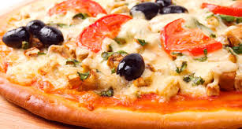
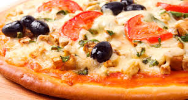

Situé depuis une quinzaine d'année au 155 Rue Nationale, au croisement de la rue du Faisan, le restaurant All Pommodoro est un restaurant proposant des spécialités italiennes. Vous y retrouverez tout ce qui se rattache aux plats typiques italiens de l'Escalope Parmigiana à la fameuse pizza. Le restaurant propose alors un large choix de plats (viandes, pâtes ou salades) à des prix raisonnables. Le restaurant All Pommodoro se démarque des pizzerias du secteur avec de grandes pizzas à emporter (30cm) à des prix très attractifs (6.50€). Le personnel saura vous accueillir dans une ambiance conviviale et chaleureuse idéale pour passer un agréable moment autour d'un savoureux plat. Des plats généreux, un service rapide et des tarifs abordables pour tout public.
 
